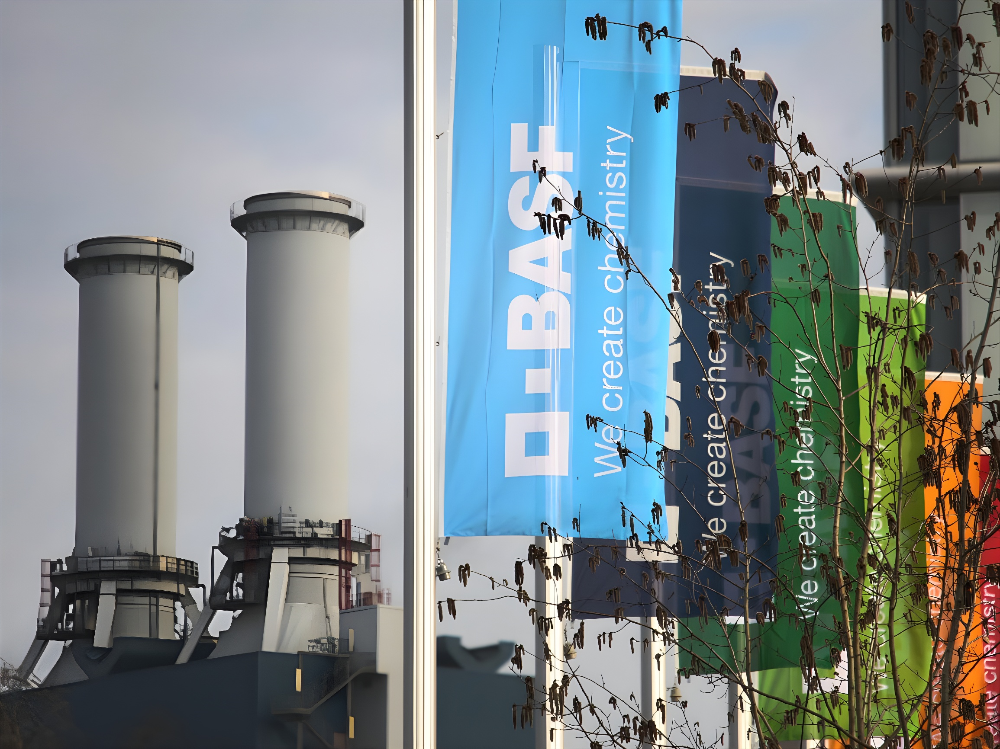

À Ludwigshafen, au bord du Rhin, le géant de la chimie BASF incarne le malaise profond d'une industrie allemande en repli. Suppressions d'emplois en série, délocalisations vers la Chine, coûts énergétiques insupportables : le premier chimiste mondial reflète, en miroir, les fractures d'un modèle industriel qui cherche encore sa voie face aux bouleversements géopolitiques et économiques de ce début de décennie.
En 2025, les industriels allemands ont supprimé 124 000 emplois, soit deux fois plus qu'en 2024, avec des pertes particulièrement lourdes dans le secteur automobile, selon une étude du cabinet de conseil EY. L'activité manufacturière est ainsi tombée l'an dernier à 19,5 % du PIB, son plus bas niveau depuis plusieurs décennies. Dans ce tableau sombre, BASF — premier chimiste mondial, dont le siège et le plus grand complexe de production sont implantés à Ludwigshafen — concentre à la fois les symptômes et les contradictions du modèle allemand.
La ville de Ludwigshafen elle-même, 175 000 habitants, est emblématique de cette dépendance : BASF y emploie quelque 30 000 personnes, faisant du groupe le principal pourvoyeur d'emplois, de prospérité et de cohésion sociale. « La situation est bien sûr difficile », confie Sinischa Horvat, président du comité d'entreprise de BASF. « L'ensemble du marché est actuellement si faible. Quand on suit les informations en ce moment, on n'entend aucun message positif. »
La crise de BASF n'est pas conjoncturelle : elle est le produit d'une conjonction de facteurs structurels aggravés depuis 2022. L'invasion russe de l'Ukraine a provoqué une envolée des prix du gaz naturel en Europe, renchérissant considérablement les coûts énergétiques du complexe de Ludwigshafen — grande consommatrice d'énergie. S'y ajoutent une faible demande industrielle mondiale, des surcapacités sur les marchés chimiques, et une concurrence chinoise croissante sur les produits de base.
Le groupe a subi en 2023 une chute de près d'un tiers de son bénéfice d'exploitation (EBITDA), à 7,7 milliards d'euros, accompagnée d'une baisse de 21 % de son chiffre d'affaires. Depuis 2022, BASF a enchaîné les plans de restructuration : d'abord 2 600 suppressions de postes dans les services centraux et la recherche, puis 3 300 emplois supplémentaires dans le monde, avant un nouveau plan annoncé en février 2024 portant sur 2 500 postes supplémentaires à Ludwigshafen seul. Au total, entre fin 2023 et fin 2025, les effectifs du groupe ont diminué de 4 800 personnes à l'échelle mondiale, dont environ la moitié en Allemagne.
Invasion russe de l'Ukraine. Les prix du gaz s'envolent en Europe, fragilisant fortement les industries énergo-intensives dont BASF.
BASF annonce un premier programme d'économies de 1,1 milliard d'euros par an. Fermeture d'unités de production d'ammoniac et de TDI à Ludwigshafen.
Nouveau plan d'économies d'un milliard d'euros supplémentaires, ciblant directement le site historique de Ludwigshafen. BASF annonce 2 500 suppressions de postes sur le site.
Le nouveau PDG Markus Kamieth annonce une réduction des dividendes de 33 % (de 3,40 € à 2,25 € par action). L'objectif d'économies passe à 2,1 milliards d'euros annuels d'ici fin 2026.
BASF démarre la production sur son site de Zhanjiang en Chine, le plus grand investissement de son histoire (8,7 milliards d'euros).
Accord de site à Ludwigshafen : BASF s'engage à ne procéder à aucun licenciement contraint jusqu'à fin 2028, en échange de la coopération syndicale.
BASF durcit encore son plan d'économies à 2,3 milliards d'euros annuels. Markus Kamieth prévient : « 2026 sera vraisemblablement une nouvelle année de transition. »
Inauguration officielle du complexe de Zhanjiang (26 mars), dans un contexte de surcapacités pétrochimiques chinoises et de perturbations liées à la guerre en Iran.
Alors que BASF taille dans ses effectifs allemands, le groupe investit massivement en Chine. Le complexe intégré de Zhanjiang, inauguré officiellement le 26 mars 2026, représente un investissement de 8,7 milliards d'euros — le plus grand projet d'investissement de l'histoire du groupe. Ce site, troisième « Verbund » du groupe après Ludwigshafen et Anvers, est conçu pour fonctionner à 100 % avec de l'électricité renouvelable et abrite un vapocraqueur d'une capacité d'un million de tonnes d'éthylène par an.
La logique de BASF est limpide : la Chine représente déjà environ 50 % du marché chimique mondial, et le groupe prévoit que 80 % de la croissance de l'industrie chimique mondiale d'ici 2035 sera concentrée dans la région Asie-Pacifique. En 2025, BASF a réalisé un chiffre d'affaires d'environ 8,2 milliards d'euros en Grande Chine, où il emploie près de 13 000 personnes. Mais cette stratégie « local-for-local » — produire en Chine pour la Chine — suscite des critiques : elle expose BASF à une dépendance envers un marché soumis à des tensions géopolitiques croissantes, après les dépréciations coûteuses subies en Russie.
| Indicateur | Donnée vérifiée |
|---|---|
| Suppressions d'emplois (monde, 2023–2025) | – 4 800 postes |
| Réduction effectifs en Allemagne | ≈ 50 % des suppressions |
| Investissement Zhanjiang (Chine) | 8,7 milliards d'euros |
| Objectif économies annuelles (fin 2026) | 2,3 milliards d'euros |
| Dividende réduit (depuis 2025) | 2,25 €/action (– 33 %) |
| Accord de site Ludwigshafen | Pas de licenciement contraint jusqu'à fin 2028 |
Les répercussions de cette désindustrialisation progressive dépassent le seul cadre économique. Marcel Fratzscher, président de l'institut économique berlinois DIW, le résume ainsi : « Des entreprises qui faisaient autrefois la fierté de l'Allemagne souffrent. » Les régions touchées par la crise industrielle, comme Ludwigshafen et le Bade-Wurtemberg, deviennent des terres de déception sociale où le sentiment d'abandon alimente la montée de l'Alternative für Deutschland (AfD). Les experts avertissent que ces territoires sinistrés constituent un terreau fertile pour le parti d'extrême droite, principale force d'opposition du pays.
Sur le plan social, BASF tente de gérer la transition avec les syndicats. L'accord de décembre 2025 — qui garantit l'absence de licenciement contraint à Ludwigshafen jusqu'à fin 2028, en échange d'un engagement d'investissement annuel de 2 milliards d'euros dont 1,5 milliard pour la modernisation du site — illustre cette volonté de préserver un minimum de paix sociale. Mais certains postes administratifs migrent désormais vers l'Inde et la Malaisie, une évolution qui nourrit l'inquiétude au sein des effectifs européens.
« L'année 2026 sera vraisemblablement une nouvelle année de transition, durant laquelle notre industrie devra faire face à de forts vents contraires. À ce jour, nous ne prévoyons ni une reprise significative du marché à court terme, ni un apaisement notable de la situation géopolitique. »
— Markus Kamieth, PDG de BASF, Ludwigshafen, 27 février 2026La trajectoire de BASF n'est pas un cas isolé : elle est le révélateur d'une mutation profonde du capitalisme industriel allemand. Le groupe incarne l'impossible équation à laquelle font face les poids lourds de l'économie rhénane — comprimer les coûts en Europe, investir massivement en Asie, satisfaire les syndicats, les actionnaires et les marchés, tout en maintenant une légitimité sociale dans des villes-usines dont ils sont le principal employeur. La question posée est celle de la réindustrialisation : l'Allemagne peut-elle reconstruire un avantage compétitif industriel sans énergie bon marché, sans demande intérieure dynamique, et dans un contexte de concurrence asymétrique avec la Chine ? BASF illustre que le dilemme n'est pas encore résolu — et que la réponse conditionnera aussi bien l'emploi dans le Rhin-Palatinat que l'équilibre politique de la République fédérale.
In Ludwigshafen am Rhein spiegelt der Chemieriese BASF das tiefe Unbehagen einer deutschen Industrie im Rückzug. Massenentlassungen, Verlagerungen nach China, untragbare Energiekosten: der weltgrößte Chemiekonzern zeigt die Risse eines Industriemodells, das noch seinen Weg sucht.
Im Jahr 2025 bauten deutsche Industrieunternehmen 124.000 Stellen ab — doppelt so viele wie 2024 —, mit besonders schweren Verlusten in der Automobilindustrie, wie eine Studie des Beratungsunternehmens EY zeigt. Der Anteil der verarbeitenden Industrie am BIP sank auf 19,5 %, den niedrigsten Stand seit Jahrzehnten. In diesem düsteren Bild konzentriert BASF — der weltgrößte Chemiekonzern mit Stammsitz und größtem Produktionsstandort in Ludwigshafen — sowohl die Symptome als auch die Widersprüche des deutschen Industriemodells.
Die Stadt Ludwigshafen selbst, mit 175.000 Einwohnern, steht sinnbildlich für diese Abhängigkeit: BASF beschäftigt dort rund 30.000 Menschen und ist damit der wichtigste Arbeitgeber, Wohlstandsmotor und sozialer Anker. „Die Situation ist natürlich schwierig", sagt Sinischa Horvat, Vorsitzender des BASF-Betriebsrats. „Der gesamte Markt ist derzeit so schwach. Man hört keine positiven Nachrichten."
Die BASF-Krise ist nicht konjunkturell, sondern strukturell: Sie ist das Ergebnis eines Zusammenwirkens langfristiger Faktoren, die sich seit 2022 verschärft haben. Die russische Invasion der Ukraine ließ die Erdgaspreise in Europa in die Höhe schnellen — für den energieintensiven Standort Ludwigshafen ein schwerer Schlag. Hinzu kommen schwache industrielle Nachfrage, Überkapazitäten auf den Chemiemärkten und ein wachsender Wettbewerb durch chinesische Anbieter.
Im Jahr 2023 brach das EBITDA um fast ein Drittel auf 7,7 Milliarden Euro ein; der Umsatz sank um 21 %. Seitdem folgte eine Restrukturierungsmaßnahme der nächsten: zuerst 2.600 Stellen in Verwaltung und Forschung, dann 3.300 weitere weltweit, dann erneut 2.500 Stellen allein in Ludwigshafen. Zwischen Ende 2023 und Ende 2025 schrumpfte die Belegschaft weltweit um 4.800 Personen — etwa die Hälfte davon in Deutschland.
Russische Invasion der Ukraine. Die Gaspreise in Europa explodieren und treffen energieintensive Industrien wie BASF hart.
BASF kündigt ein erstes Sparprogramm über 1,1 Mrd. € jährlich an. Schließung von Ammoniak- und TDI-Anlagen in Ludwigshafen.
Neues Sparprogramm über 1 Mrd. € zusätzlich, das direkt den Stammstandort Ludwigshafen betrifft. Ankündigung von 2.500 weiteren Stellenstreichungen.
Neuer CEO Markus Kamieth kündigt Dividendenkürzung um 33 % an. Das Einsparziel steigt auf 2,1 Mrd. € jährlich bis Ende 2026.
BASF nimmt die Produktion in Zhanjiang (China) auf — die größte Einzelinvestition der Unternehmensgeschichte (8,7 Mrd. €).
Standortvereinbarung Ludwigshafen: BASF verpflichtet sich, bis Ende 2028 auf betriebsbedingte Kündigungen zu verzichten.
BASF verschärft sein Sparziel auf 2,3 Mrd. € jährlich. Kamieth warnt: „2026 wird voraussichtlich ein weiteres Übergangsjahr."
Offizielle Eröffnung des Verbundstandorts Zhanjiang — bei gleichzeitiger chinesischer Überkapazität und Lieferkettenstörungen durch den Irankrieg.
Während BASF in Deutschland Stellen abbaut, investiert der Konzern massiv in China. Der am 26. März 2026 offiziell eingeweihte Verbundstandort Zhanjiang im Süden Chinas ist mit 8,7 Milliarden Euro Investition das bislang größte Einzelprojekt des Konzerns. Dieser Standort, der dritte Verbund nach Ludwigshafen und Antwerpen, ist auf 100 % erneuerbaren Strom ausgelegt und verfügt über einen Dampfcracker mit einer Jahreskapazität von einer Million Tonnen Ethylen.
Die Logik von BASF ist klar: China macht bereits rund 50 % des weltweiten Chemiemarkts aus, und BASF erwartet, dass 80 % des Wachstums der globalen Chemieindustrie bis 2035 in der Asien-Pazifik-Region stattfinden wird. Im Jahr 2025 erzielte BASF in Großchina einen Umsatz von rund 8,2 Milliarden Euro und beschäftigte dort knapp 13.000 Mitarbeiter. Doch diese „Local-for-local"-Strategie steht in der Kritik: Sie setzt BASF einer geopolitischen Abhängigkeit aus — nach teuren Wertberichtigungen infolge des Russlandgeschäfts ein bekanntes Risiko.
| Kennzahl | Verifizierter Wert |
|---|---|
| Stellenabbau weltweit (2023–2025) | – 4.800 Stellen |
| Davon in Deutschland | ≈ 50 % der Streichungen |
| Investition Zhanjiang (China) | 8,7 Milliarden Euro |
| Jährliches Einsparziel (Ende 2026) | 2,3 Milliarden Euro |
| Gekürztes Dividende (ab 2025) | 2,25 €/Aktie (– 33 %) |
| Standortvereinbarung Ludwigshafen | Kein Zwangsentlassung bis Ende 2028 |
Die Auswirkungen dieser schleichenden Deindustrialisierung gehen weit über die Wirtschaft hinaus. Marcel Fratzscher, Präsident des Berliner DIW-Instituts, bringt es auf den Punkt: „Unternehmen, die einst der Stolz Deutschlands waren, leiden." Die von der Industriekrise betroffenen Regionen — wie Ludwigshafen und Baden-Württemberg — werden zu sozialen Brennpunkten, in denen das Gefühl des Verlassenwerdens die Alternative für Deutschland (AfD) stärkt.
Auf sozialer Ebene versucht BASF, die Transformation mit den Gewerkschaften zu gestalten. Die Standortvereinbarung vom Dezember 2025 — die bis Ende 2028 betriebsbedingte Kündigungen ausschließt und jährlich rund 2 Milliarden Euro Investitionen vorsieht, davon mindestens 1,5 Milliarden für die Modernisierung des Standorts — zeigt diesen Willen zum sozialen Kompromiss. Dennoch wandern Verwaltungsjobs zunehmend nach Indien und Malaysia ab.
„2026 wird voraussichtlich ein weiteres Übergangsjahr sein, in dem unsere Branche mit starken Gegenwind konfrontiert sein wird. Derzeit rechnen wir weder mit einer kurzfristigen Markterholung noch mit einer spürbaren Entspannung der geopolitischen Lage."
— Markus Kamieth, Vorstandsvorsitzender BASF, Ludwigshafen, 27. Februar 2026Die Entwicklung von BASF ist kein Einzelfall: Sie ist das Symptom eines tiefgreifenden Wandels des deutschen Industriekapitalismus. Der Konzern steht vor einer unlösbaren Gleichung — Kosten in Europa senken, in Asien massiv investieren, Gewerkschaften, Aktionäre und Märkte gleichzeitig befriedigen, und dabei die gesellschaftliche Legitimität in Industriestädten bewahren, deren wichtigster Arbeitgeber er ist. Die eigentliche Frage ist die der Reindustrialisierung: Kann Deutschland seinen Wettbewerbsvorteil in der Industrie ohne billiges Gas, ohne dynamische Binnennachfrage und angesichts eines asymmetrischen Wettbewerbs mit China wiederherstellen? BASF zeigt, dass das Dilemma ungelöst bleibt — und dass die Antwort sowohl die Beschäftigung in Rheinland-Pfalz als auch das politische Gleichgewicht der Bundesrepublik mitbestimmen wird.